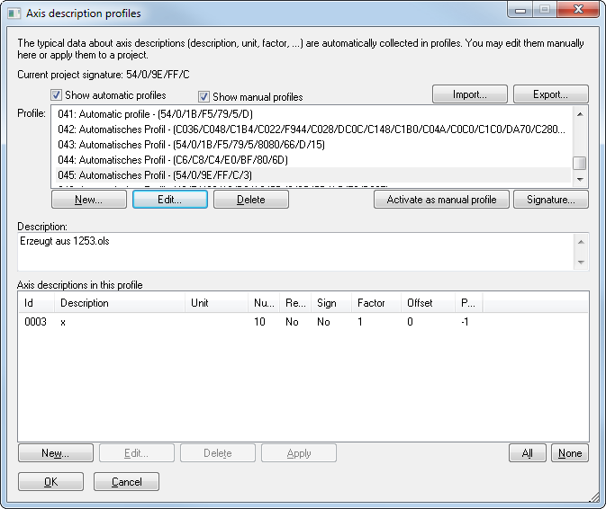

|
The dialog Axis description profile (Menu Find) |

  
|
|
The dialog Axis description profile (Menu Find) |
|

Axis description profiles are collections of axis descriptions (Name, unit, sign, factor, etc). They're automatically created from projects by WinOLS, and can automatically or manually be applied to new maps to set the description information.
Automatically:
WinOLS automatically collects axis description profiles in the background (unless you have disabled it in the configuration dialog under ‘automatically’). An axis description profile contains a signature which enables WinOLS to recognize the source project and similar projects. This signature is automatically generated from maps that are searched in the background. If you now configure axis descriptions or import this information from a Damos file, then information about the description, unit, factor, offset, etc. is collected in the profile.
If you later insert maps into a different project, then WinOLS will automatically fill in the axis description information, if the axis is recognized.
Note: A signature cannot be generated for every project. Only projects with Bosch maps contain a signature. Bosch II maps are not enough, unless the project contains ‘normal’ Bosch maps, too.
In this dialog you may view and select (combo box at the top) the different profiles and even rename them. In the lower part of the screen you can see the different axis descriptions that were recognized for the current profiles. You may edit, delete or apply them. Normally you won’t need to do all this manually, since WinOLS does everything automatically in the background.
Manually:
For the manual mode there is always an active axis description profile. With the respective button you can tell WinOLS which profile should be active. The active profile collects the axis descriptions that are available to you in the dialog "Map properties" as menu when you click on the small black triangle. By switching the active profiles you can administrate different collections, for example for different car types.
Groups:
You can create groups to define data for map+X-axis+Y-axis and then apply them together. Only the group entry is then displayed in the menu. However, all other entries in the group are applied. The members of a group must have the same signature ID - with the exception of the last digit. This must be:
F: Group name
0: Map data
1: X-axis data
2: Y-axis data
Export + Import:
Use the button "Export" to write all selected profiles into a file. You can then use the "Import" button to append the profiles from the file to the ones in the list.
You can also backup this data manually.The data of the axis description profiles are store in the file "ols_sp.cfg". The current manual profile is part of the global configuration file "ols.cfg". Both files are stored in the WinOLS Configuration directory. You can copy these files any time, but should only replace them while WinOLS is closed.
Shortcuts
| Symbol bar: | - |
| Keyboard: | Alt+Shift+P |